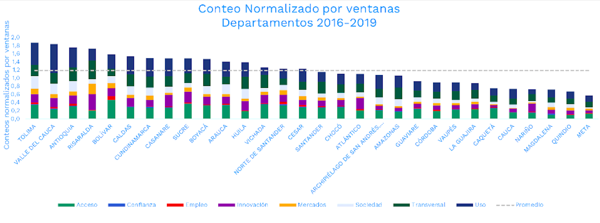
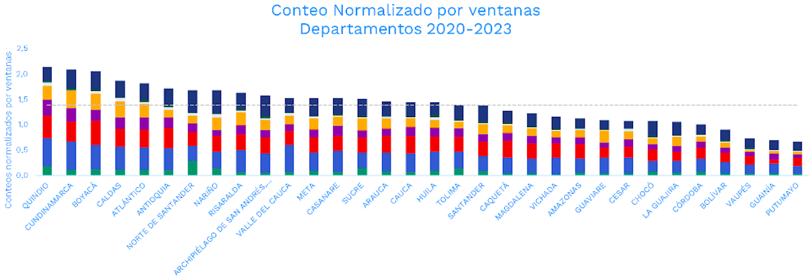
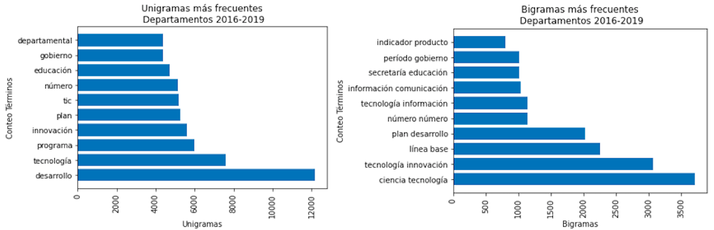
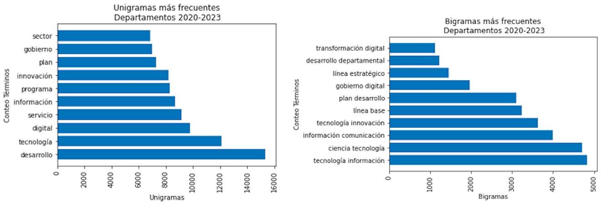

Analyzing Digital Transformation in Colombian Regional Development Plans: A Natural Language Processing Study
In this project, to use Natural Language Processing (NLP) to identify and count terms related to different dimensions (access, trust, employment, innovation, markets, society, cross-cutting, and use) of digital transformation in Colombia's regional development plans for the periods 2016-2019 and 2020-2023 at both the departmental (32 documents) and municipal (1104 documents) levels, and to measure their evolution between these two periods. Additionally, to find similarities between the regional documents and national policy documents related to digital transformation, as well as to identify other words accompanying the terms considered a priori related to this topic.
The project involved the following steps:
- Reading, cleaning, identifying, and counting the related terms linked to each dimension. For this, the individuals working on the topic provide me with the list of terms to search for and that are linked to each of the dimensions. For example, the terms for the markets dimension include: Industry 4.0, Digital Business, FinTech, digital entrepreneurship, etc.
- Generating a normalized index of term counts to compare documents of different sizes.
- Generating hypothesis tests to assess the statistical significance of the difference in the normalized index between the periods 2016-2019 and 2020-2023 for the regional documents.
- Generating a contextual analysis by counting the unigrams and bigrams found around the initially sought terms related to digital transformation.
- Generating an index of similarity between the departmental and municipal development plans and the national policy documents related to digital transformation.
Counting of terms by dimensions and generation of the normalized index of terms counts.
In this part, a series of processes are generated to clean the text. These processes reduce the number of words that make up the entire universe of documents, which facilitates the automatic search and matching of the terms of interest within the documents.
- Document Reading: In this initial stage, all documents are read. Optical Character Recognition (OCR) is utilized to extract text from images or scanned documents.
- Text Cleaning: In this stage, punctuation marks are removed, numbers are converted to lowercase, and stopwords are removed. Stopwords are words that do not carry significant meaning on their own, such as articles, pronouns, and prepositions, as well as context-specific words that may be frequent but do not add value, such as the names of people, municipalities, and departments in Colombia.
- Text Lemmatization: In this step, all inflected forms of a word are transformed into its lemma or root. For example, words like "mesas," "mesón," and "mesitas" are all transformed into their lemma, "mesa."
- Phrase Search: The document is divided into pages and then into smaller text fragments called analysis windows. Each analysis window consists of 100 words, although in some cases it may contain fewer words due to the number of words per page. The search for words/phrases is conducted in each of these fragments using regular expressions, and the count of each term or phrase is performed.
As a result of this procedure, a table is generated containing the count of terms, structured as follows:
| DIVIPOLA DOCUMENT CODE | DIMENSION | TERM | COUNTING |
|---|---|---|---|
| 24 | Society | Digital Goverment | 20 |
| ... | ... | ... | ... | <
| 24 | Usage | Digital Education | 4 | <
After tallying the terms of interest, we normalize the counts by the number of windows obtained in each document (100 words per window). This normalization allows for comparisons between documents. The indicator quantifies the average number of words related to digital transformation per 100 words. An index is obtained for each dimension, and the total index is the sum of the indices for all dimensions.
The following graph displays the total indicator, which corresponds to the sum of the indicators for each dimension. It is observed that the "Uso" (Use) dimension appears with the highest frequency on average, encompassing words such as digital technologies, new technologies, apps, programming, etc., in both the documents from the 2016-2019 period and the 2020-2023 period.
 Comparison of Territorial Development Plans (PDT) using standardized counts: 2016-2019 vs. 2020-2023 (hypothesis testing).
Now, the comparison of the indicator of total normalized counts per windows for all departments is carried out to determine if the average number of words increased or decreased between the periods 2016-2019 and 2020-2023. It is observed that in the majority of departments (24), the average number of words increased, except for 8 departments.
Therefore, a hypothesis test is conducted on the difference in means, where the null hypothesis indicates that the mean of the indicator of total counts normalized per windows in the Departmental PDTs from 2016-2019 is less than the mean of the indicator of total counts normalized per windows in each of the Departmental PDTs from 2020-2023. A one-tailed t-test for two samples with unequal variances was performed, using the following initial data:
| Statistic | PDT 2016-2019 | PDTs 2020-2023 |
|---|---|---|
| Mean | 1.2 | 1.4 |
| Variance | 0.2 | 0.2 | <
| Number of observations | 32 | 32 | <
Therefore, a hypothesis test is conducted on the difference in means, where the null hypothesis indicates that the mean of the indicator of total counts normalized per windows in the Departmental PDTs from 2016-2019 is less than the mean of the indicator of total counts normalized per windows in each of the Departmental PDTs from 2020-2023. A one-tailed t-test for two samples with unequal variances was performed, using the following initial data:
H0: μ2016-2019 = μ2020-2023
H1: μ2016-2019 < μ2020-2023
The following results are obtained:
| Results | Value |
|---|---|
| t-statistic | -2.23 |
| Critical t-value (one-tailed): | 1.7 | <
| P(T <= t) one-tailed: | 0.0 | <
The null hypothesis is rejected, meaning that the mean of the indicator of total counts normalized per windows is greater for the period 2020-2023. In other words, the average number of terms increased between the periods 2016-2019 and 2020-2023.
Context analysis.
The context analysis involves examining the terms that surround the terms of interest. To do this, we analyze the windows (groups of 100 words) where the terms related to digital transformation were found and count the other terms found in these windows. The most frequent unigrams obtained were "desarrollo" (development) and "tecnología" (technology) for both study periods, while the most frequent bigram was "ciencia y tecnología" (science and technology) for the 2016-2019 period and "transformación digital" (digital transformation) for the 2020-2023 period.
 These analyses were generated at the term level, meaning that it is possible to analyze the contextual words by term or by dimension, or by groups of terms. For this purpose, a table with the following structure is generated:
| DIVIPOLA DOCUMENT CODE | DIMENSION | TERM | CONTEXT WORD | COUNTING |
|---|---|---|---|---|
| 24 | Society | Digital Goverment | Public policy | 20 |
| ... | ... | ... | ... | ... | <
| 24 | Usage | Digital Education | Higher Education | 4 | <
Similarity Index:
The objective of this part is to compare the regional documents with the documents that govern digital transformation at the national level. For this purpose, a similarity index is generated for the departmental and municipal development plans of the periods 2016-2019 and 2020-2021 with the national public policy documents (CONPES 3975, CONPES 3688, CONPES 3995, CONPES 4012, PND Pacto 7), in order to understand how aligned the national and regional policy documents are.
To generate this similarity, a Bag of Words matrix is created containing all the words that appear in the texts after cleaning, along with their frequency of occurrence. Each row corresponds to a document, and each column corresponds to a word. The matrix contains the frequency or number of times word 𝑗 appears in document 𝑖.
| Document/Term | Term 1 | Term 2 | Term 3 | ... | Term j |
|---|---|---|---|---|---|
| Document 1 | 21 | 13 | 0 | ... | 10 |
| Document 2 | 14 | 22 | 8 | ... | 9 |
| ... | ... | ... | ... | ... | ... |
| Document i | 22 | 23 | 0 | ... | 23 |
Using this matrix, the cosine similarity between each pair of documents is calculated. Cosine similarity is a measure of similarity between two vectors in the same space, evaluating the cosine of the angle between them. If two documents are identical, the angle between the vector of document A and the vector of document B would be 0°, resulting in a cosine value of 1, indicating maximum similarity. Here, A and B represent the vector representation of each pair of compared documents.
The following bar chart displays the top ten (10) departmental documents from the periods 2016-2019 and 2020-2023 that show the highest similarity with the national policy document CONPES 3975. This process is carried out for each national policy document vs. departmental documents.
Note: 4% of the documents did not have sufficient quality to be read by OCR and were not included in the study. The same results apply to the municipal documents.